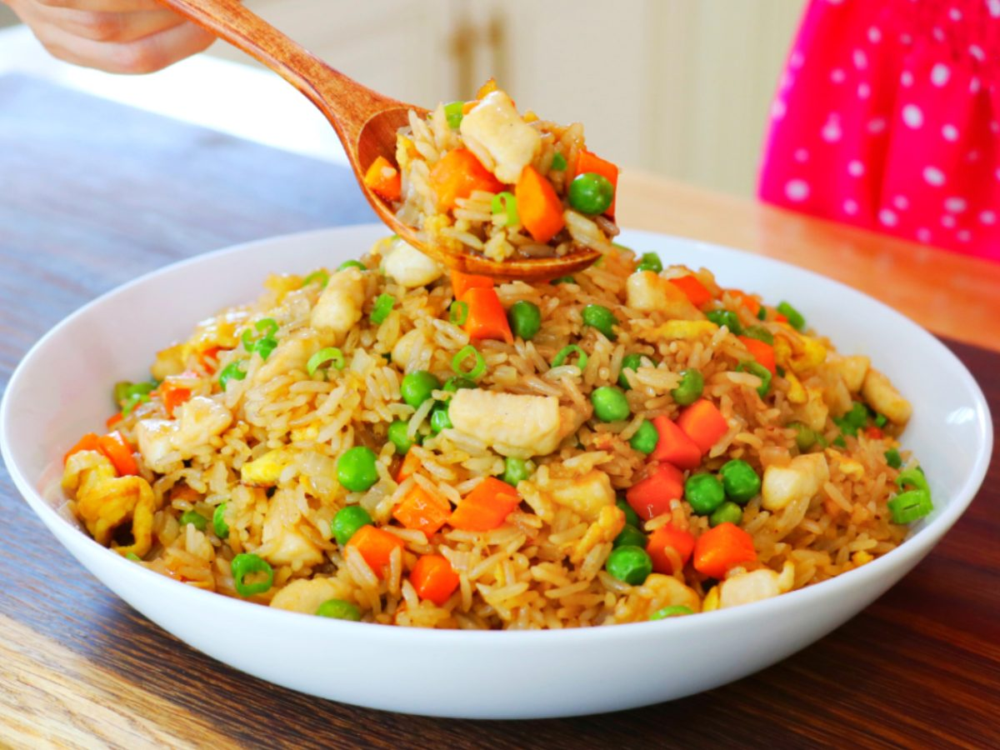
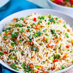
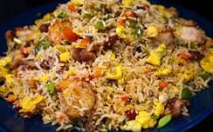

What inspires you
Fast food is inspired by the need to provide quick, satisfying, and flavorful meals that cater to the fast-paced nature of modern life. It draws influence from a variety of global cuisines, combining bold flavors and familiar ingredients to create dishes that are both convenient and crave-worthy.
popular recipies
Chicken fried rice
Description
Chicken Fried Rice is a flavorful and hearty dish made by stir-frying cooked rice with tender pieces of chicken, scrambled eggs, and a mix of vegetables such as peas, carrots, and green onions.
read moreegg fried rice
Description
Egg Fried Rice is a simple yet delicious dish made by stir-frying cooked rice with scrambled eggs and vegetables like green onions and peas. It’s lightly seasoned with soy sauce and sometimes garlic or sesame oil.
read moreveg fried rice
Description
Veg Fried Rice is a flavorful dish made by stir-frying cooked rice with a variety of vegetables like carrots, beans, peas, and bell peppers. It’s seasoned with soy sauce, garlic, and sometimes a hint of chili for extra spice.
read moremixed fried rice
Description
Non-Veg Mixed Fried Rice is a hearty and flavorful dish made by stir-frying rice with a combination of chicken, prawns, and sometimes eggs or other meats. It’s tossed with vegetables, soy sauce, and aromatic spices for a rich, savory taste.
read moreprawn fried rice
Description
Prawn Fried Rice is a delicious stir-fried dish made with cooked rice, succulent prawns, and mixed vegetables. It’s seasoned with soy sauce, garlic, and sometimes a dash of chili or sesame oil for added flavor.
read morecontact
Contact
Name: Mr. Vamsi
Position: Head Chef / Manager
Restaurant Name: Btech Babu fastfood
Phone: +91-6304276484
Email: vamsi@BtechBabu.in
Address: No. 22, MG Road, Hyderabad
about us
Welcome to BTech Babu FastFood Center where hunger meets happiness! Founded by a group of passionate BTech graduates with a love for food and innovation, our center brings you the perfect blend of taste, quality, and speed.
At BTech Babu, we serve a wide range of lip-smacking fast food items, from cheesy burgers and crispy fries to spicy wraps and chilled beverages all crafted with care and fresh ingredients.
What makes us special? We bring the energy and creativity of college life into every dish we serve. Whether you're a student on a break, a working professional, or a family looking for a quick bite, BTech Babu is your one-stop food joint!
With fast service, pocket-friendly prices, and a chill vibe, we invite you to come and experience the flavor revolution. Taste the techie twist in every bite!
BTech Babu FastFood Center Engineered for Taste!